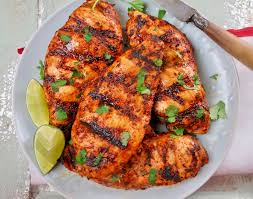

Mexican Grilled Adobo Chicken

Mexican Grilled Adobo Chicken is a fairly simple recipe that makes otherwise boring chicken into an amazing smokey and spicey dish
- Ingredients
- 3 Chicken Breasts
- 1 7oz Can of Chilis in Adobo Sauce
- 1 7oz Can of Jalapenos Peppers
- 1/2 of a White Onion
- 1 Tomato
- The Leaves of 1 Bundle of Cilantro
- Salt and pepper to taste
Steps
- Add all ingredients to a blender with a little bit of water | (Optional): Save some cilantro for garnish
- Blend all ingredients into a fine puree
- Pour the puree into a large ziplock bag
- Add the Chicken Breasts into the ziplock bag and marinate overnight
- Take the Chicken Breasts out of the marinade and discard the bag and it's contents
- Pat the Chicken Breasts with a paper towel to remove excess marinade
- Let the Chicken rest for 15 minutes
- On a grill over medium heat, cook the Chicken Breasts until internal temperature reaches 165 Degress Farenheit
- Let Chicken Cool
- Enjoy!
Back